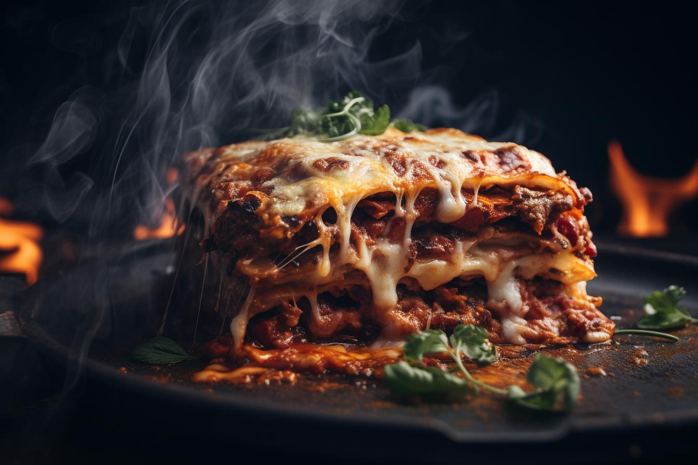

Lasagna

Cheesy Lasagna
An awsome recipe for homemade juicy cheesy lasagna.
Ingredients
- pound ground beef
- 1 pound ground pork
- 1 onion finely chopped
- 4 cloves garlic minced
- 24 ounces marinara sauce
- 1 teaspoon salt
- 1/2 teaspoon black pepper
- 16 ounces ricotta cheese
- 2 cups shredded mozzarella cheese
- 1/2 cup grated Parmesan cheese
- 2 eggs
- 1/4 cup fresh parsley chopped
- 1/4 teaspoon salt
- 1/4 teaspoon black pepper
- 12 lasagna noodles cooked and drained
- 2 cups shredded mozzarella cheese
- 1/2 cup grated Parmesan cheese
steps
- In a skillet over medium heat, cook the ground beef and pork until browned. Break it up into small pieces with a wooden spoon as it cooks.
- Add the chopped onions and minced garlic to the skillet. Sauté until the onions are translucent and soft, about 5 minutes.
- Pour in the marinara sauce and season with pepper and salt. Stir well, then reduce the heat and let the sauce simmer for 10-15 minutes.
- Once the meat sauce is ready, set it aside.
-
Combine the ricotta, 2 cups of mozzarella, 1/2 cup of parmesan, eggs, fresh parsley,salt and pepper in a mixing bowl. mix until all the ingredients are well combined.
-
Set the cheese filling aside for later.
- Cover bottom of a 9x13-inch baking dish with 1 cup sauce.
Repeat the layering process: meat sauce, noodles, cheese filling until you run out of ingredients. Finish with a layer of noodles on top.
- Sprinkle 2 cups of shredded mozzarella and 1/2 cup of grated Parmesan cheese over the final layer of noodles.
- Bake until lasagna noodles are tender and the lasagna is bubbling, about 45 minutes. Remove foil and bake until cheese topping is lightly browned, 10 to 15 more minutes. Let stand 15 minutes before serving.